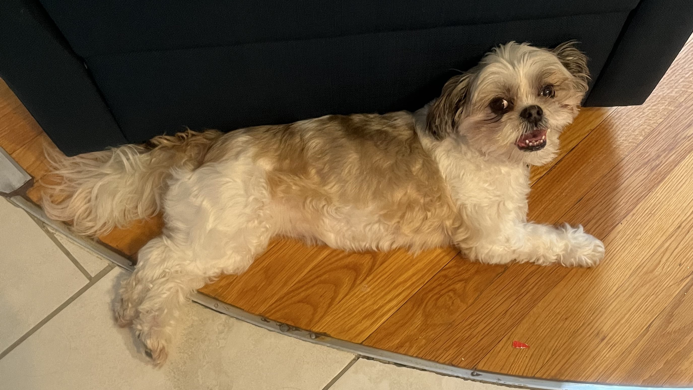

Get to Know Pebbles!
Pebbles is always looking for new friends!

5 Things to Know About Pebbles
- She likes to be cradled like a human baby.
- She's not food motivated and very picky about her treats.
- When she is done walking, she'll let you know.
- Everyone on the street is there to see her, obviously
- She is aware of how cute she is.
A Day in the Life of a Shih Tzu
As a Shih Tzu, Pebbles was never meant to do much of anything, really. Historically, Shih Tzus were lapdogs to Chinese royals, so they've never held jobs. It shows.
Here's what the average day looks like for Pebbles:
| Time | Activity |
|---|---|
| 9:57 AM | Wake up Mother |
| 10 AM | Stare out window |
| 12 PM | Bark at traffic / Lunch |
| 2 PM | Nap |
| 4 PM | Disrupt Mother while she works |
| 6 PM | Bark at neighbors |
| 8 PM | Zoomies |
| 10 PM | Dinner / Remember to drink water |
| 12 AM | Follow someone to bed |